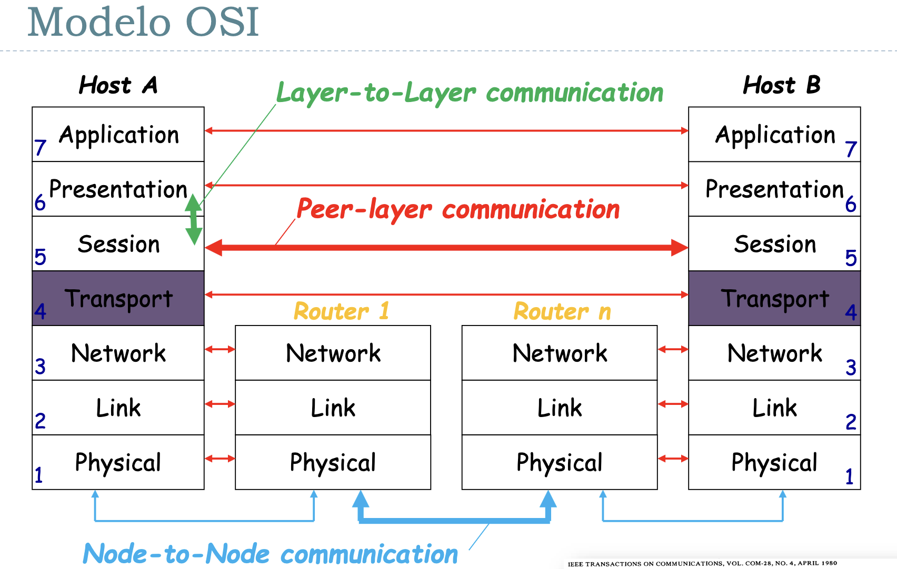

Unidad 1 - Introducción, conceptos básicos y capa física
El primer invento similar a lo que conocemos hoy en día como redes de comunicación fue la del telégrafo. Luego, le siguió la del teléfono, y ambos tenían una cualidad que persistió hasta aproximadamente la década del 70: la conmutación de circuitos.
La conmutación de circuitos como indica el nombre implicaba que haya operarios encargados de conectar a las dos personas / aparatos que querían iniciar una comunicación (cof cof, operadora, comuníqueme con pirulito)
Este approach tiene varias desventajas, por lo que mayoritariamente entre los años 1959-1969 se desarrollaron las ideas que nos llevaron a la conmutación de paquetes, cuyo objetivo principal era resultar en una red más tolerante a fallas. Cómo se logró esto?
- Redundancia: que haya múltiples caminos entre dos puntos de la red
- Descentralizada: toleracia a censura
- División en fragmentos de los mensajes cosa de que puedan tomar caminos diferentes.
ARPANET (Advanced Research Projects Agency Network) fue uno de los más importantes.
Estandarización
Las tecnologías de redes con conmutación de paquetes se suiguieron desarrollando, terminando a mediados de los 80 con una situación en la que tenías muchas redes distintas cada una con su implementación particular y sus propios detalles. Se empieza a hablar de la idea de tener una red única (en mayo de 1983 ISO publica “ISO 7498:The Basic Reference Model for Open Systems Interconnection” como un estándar internacional)

El modelo OSI describe tódo lo que sucede con la información en una comunicación entre dos puntos. Parte el proceso en 7 capas, en la que cada una tiene un fin particular y cuyas entidades relevantes son definidas por eso. Por ejemplo, en la capa de aplicación tu entidad puede ser un archivo mientras que en la capa de de red tu entidad puede ser el paquete.
Si bien se usa el modelo OSI para estudiar teoría de comunicaciones, hoy en día el verdadero ganador fue el modelo de TCP/IP, en donde hay 4 capas en lugar de las 7 que propone OSI

TLDR: OSI y TCP/IP compitieron durante un tiempo, pero una de las mayores diferencias radicaba en que OSI era un protocolo que se estaba gestando por un comité conformado por gente de la industria y cada uno quería tener su influencia sobre el protocolo. Esto resultó en problemas para ponerse de acuerdo y en un modelo que si bien era completo era mucho más difícil de implementar, más caro y complejo.
Mientras seguían discutiendo sobre el estándar de OSI, TCP/IP ya se estaba usando...
Nivel Físico
Sistema de Comunicaciones
Modelo: tengo fuente de info -> Emisor -> ----- canal de comunicación ----- -> Receptor -> Destino
- Qué es información?
- Qué es un canal?
- guiado (cable)
- no guiado (inalámbrico)
- Siempre me ingresa ruido (alto o bajo)
Hablo en meet y tengo a mi gato maullando. Tengo que hablar más fuerte. Más fuerte = mejor? Bueno no, lo que importa es la relación entre cuánto grito y el ruido ambiente.
- Relación Señal / Ruido
- La señal tiende a atenuarse a mayor distancia. Si se achica la señal y el ruido es constante, entonces se achica la capacidad de transmisión también.
- Lo importante de señal:
- Es una onda electromagnética
- Se propaga a la velocidad de la luz (a un ~70% de la velocidad de la luz en el vacío)
- Demora, no es instantáneo (es un límite físico, no lo puedo evitar)
- Tiempo de propagación
- RTT (Round Trip Time) entre USA y ARG = 100ms
Frecuencia \(f\) = Cantidad de ciclos que entran en un segundo
Longitud de onda \(\lambda\) = \(c\) (velocidad de la luz) \(/ f\)
- a mayor frecuencia menor longitud de onda (\(c\) es constante)
Glosario:
- Amplitud
- Frecuencia Angular (= \(2 \pi f\))
- Frecuencia Temporal (\(f\))
- Período = \(\frac{1}{f}\)
- Fase (desplazamiento)
Dominio Transformado
Lo anterior era orientado al dominio del tiempo. Idea: paso ese dominio a otro para procesarlo mejor:
- serie trigonométrica de fourier -> puedo representar ordas cuadradas como una serie infinita de senos y cosenos
- permite descomponer la señal en las distintas frecuencias
- transformada de fourier
- lo anterior en la teoría. Esto en la práctica
- esto es lo que en la práctica permite descomponer una señal en sus distintas armónicas / componentes de frecuencia
Ancho de banda
Rango de frecuencias senoidales que pueden pasar por el medio sin ser atenuadas (< 3db, esto es una generalización).
Tengo ancho de banda de 0 a 4 khz. Meto onda cuadrada periódica de 3khz en un canal con ancho de banda de 0 a 4khz. Qué obtengo a la salida?
Rta: Obtengo una onda senoidal de 3khz, porque la primera armónica tiene el triple de frecuencia que la fundamental (en este caso es de 3 y la armónica ya tiene 9), o sea que salvo la fundamental te filtra todo.
Teoría de la información
(En el 48') Llega Shannon con su paper "A Mathematical Theory of Communication". Ídolo, Genio, Maestro, Crack.
Idea fundamental:
- No interesa el significado del mensaje (No me importa si es teléfono, tele, internet, etc.)
- Teoría Clásica de la información
- Propone 2 teoremas fundamentales:
- Codificación para una fuente sin ruido
- Codificación para un canal con ruido
- Sorprendentemente nunca habla de cómo implementar nada
Definición: qué es la información
$$ I(E) = log(\frac{1}{P(E)}) $$
La información que me da un evento es el logaritmo de la inversa de la probabilidad de que ese evento suceda.
Unidades:
- log en base 2? 1 bit (por qué? Si tengo un dígito binario equiprobable \(I(\)sale 0/1\() = 1\)
- (hay otros)
Fuente de Memoria Nula
Es el modelo que tomamos asumiendo que cada símbolo que emite es estadísticamente independiente del siguiente
Entropía
Viene a representar algo así como la cantidad media de info por símbolo de la fuente (similar a Esperanza).
$$ \sum_S P(s_i)I(s_i) \text{ bits} $$
Es algo como la cantidad de info que voy a obtener cuando observo un símbolo / evento.
Cuándo maximizo la info que me van a dar los eventos? Cuando los eventos son equiprobables.
Extensión de la Fuente de Memoria Nula
En vez de considerar de a un bit, agrupo varios bits juntos
Codificación
Codificación sería el proceso por el cual mappeamos los símbolos de la fuente a símbolos de un alfabeto asociado. Por qué hacemos esto? En primer lugar porque a veces no tenemos una representación sencilla con la que trabajar. Y segundo porque dependiendo el tipo de codificación que usemos vamos a obtener una mejor o peor eficiencia.
- Le decimos código bloque a una codificación que asigna cada símbolo de la fuente a una secuencia de símbolos del alfabeto destino.
- Si la codificación es una función inyectiva, decimos que la codificación es no singular
- Y decimos que una codificación es unívocamente decodificable si ninguna tira de símbolos del código (o sea los códigos generados) admite más de una única decodificación.
- Por último, decímos que un código es instantáneo si es posible decodificar sin ver los símbolos que suceden (no tiene que hacer look ahead)
Una condición necesaria y suficiente para que un código sea instantáneo, es que no haya palabra en el alfabeto que sea prefijo de la misma. Ojo, dos palabras pueden tener un mismo prefijo común siempre que el mismo no pertenezca al alfabeto.
Teorema: Instantáneo => unívocamente decodificable
- En ascii tenemos 8 digitos binarios por símbolo
- Sin embargo, en morse tenemos una cantidad variable
Pensemos ahora que lo que mandamos son mensajes, y para representar cada mensaje (\(m_i\)) lo representamos con una palabra de longitud \(L_i\). Y nuestro símbolo se codifica con cadenas de un alfabeto de \(r\) símbolos.
Para esto último se define la longitud media de un código. Es la probabilidad de ocurrencia de cada símbolo por su longitud. Sería como la esperanza de la longitud de recibir un símbolo, o algo así.
$$ L = \sum{p_i L_i} $$
Cómo lo minimizo? Al que más probabilidad tenga, le doy el código más chico.
Otra cosa más, es que para asegurar que no haya pérdida de información requiero que:
$$ L log(r) \geq H(S) $$
Donde \(log(r)\) es la cantidad promedio máxima de info de un símbolo del código (por lo que vimos antes).
Definimos con esa desigualdad la eficiencia de un código \(h\) como:
$$ h = \frac{H(s)}{L log(r)} $$
y \(h_{max} = 1\)
Codificación de Huffmann
Es un método que permite construir codificadores óptimos en base a la frecuencia en la que aparecen los símbolos (de la fuente).
Medios de Transmisión Reales
Cualquier canal de comunicación:
- Está expuesto a ruido
- Tiene problemas de potencia
- Tienen problemas de ancho de banda
Fórmula de capacidad de Shannon para un canal sujeto a ruido
$$ C_max(bps) = B(\text{hz}) log_2(1 + \text{SNR}) $$
La relación señal-ruido de la capacidad de Shannon se expresa como logaritmos:
$$ SNR_{db} = 10 log_{10}(\text{SNR}) = 10 log_{10}(\frac{\text{PotenciaSeñal}}{\text{PotenciaRuido}}) $$
Por qué la escala logarítmica?
Es para ajustarse a las magnitudes. La atenuación es logarítmica, el oido tiene respuesta logarítmica, etc. Y la escala logarítmica resulta más práctico (sobre todo para visualizar)
Intro a Nyquist
El ñato este tiró una fórmula para la capacidad máxima en canales sin ruido:
-
2 niveles: $$ C = 2B(\text{Hz}) $$
-
\(M\) niveles: $$ C = 2B(\text{Hz})log_2(M) $$
Sin embargo hay una restricción, \(M\) tiene que ser más chico que \(\sqrt(1 + \text{SNR})\)
Qué es el delay?
Está formado por:
- el tiempo de propagación
- el tiempo de transmisión
- el tiempo de encolamiento
- el tiempo de procesamiento
Notar que sólo el tiempo de propagación ya te puede estar limitando porque transmitimos casi a la velocidad de la luz y sin embargo para mandar 1 bit por 10000km por fibra tengo un tiempo de propagación aproximado de 50ms (y por lo tanto 100ms de RTT).